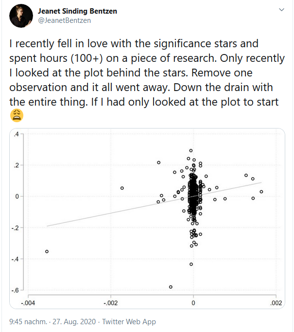
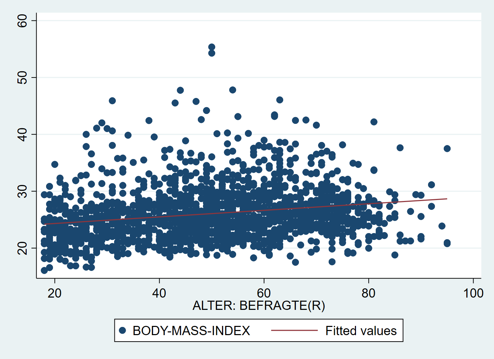
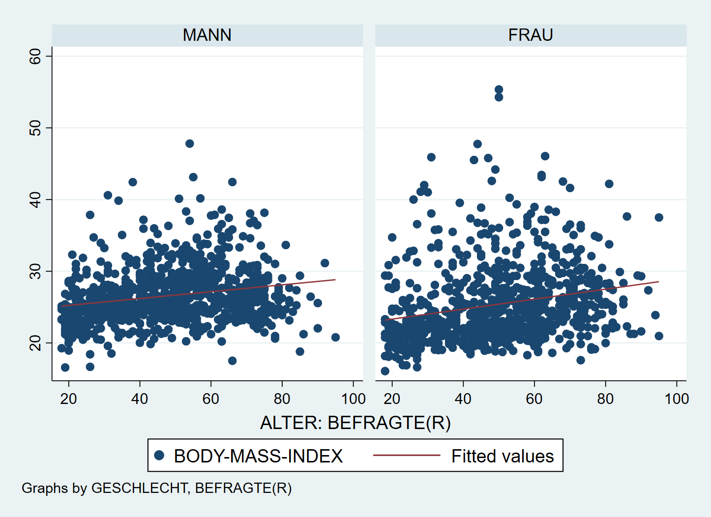
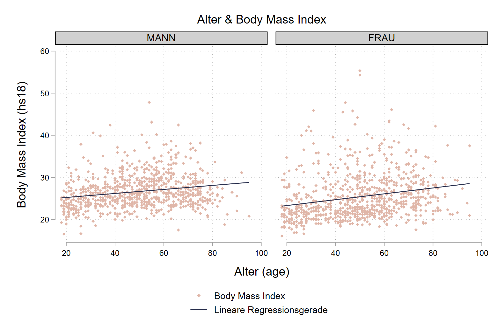
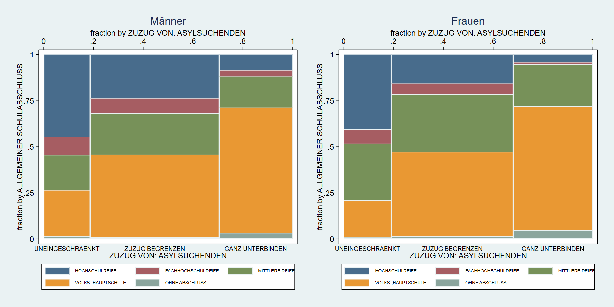
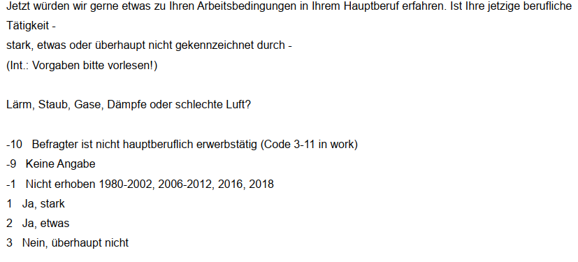
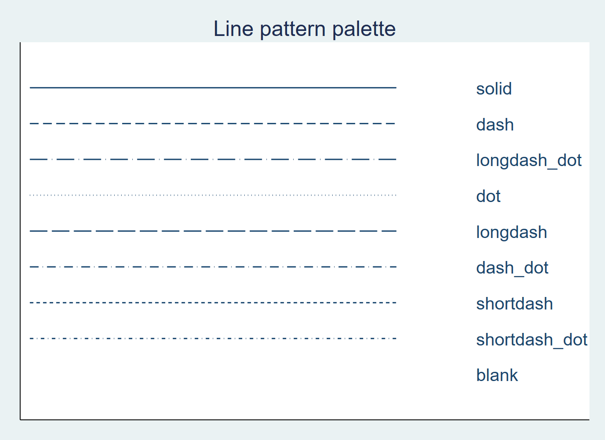

6 Zusammenhänge 2
Wir betrachten nochmal das Beispiel aus der vorherigen Session:
(64,681 observations deleted)
age: 7 missing values generated
hs18: 1859 missing values generated6.1 Zusammenhänge vergleichen
Wir können die Zusammenhangsmaße auch jeweils nur für Subgruppen berechnen, indem wir mit if entsprechende Bedingungen anhängen. So könnten wir zB. analysieren ob der Zusammenhang zwischen dem BMI (hs18) und age für Frauen oder Männer stärker ist, indem wir an alle Variablen jeweils if sex ==1 zur Auswahl der männlichen Befragten bzw. if sex ==2 für Frauen anhängen:
(obs=834)
| age hs18
-------------+------------------
age | 1.0000
hs18 | 0.2120 1.0000(obs=786)
| age hs18
-------------+------------------
age | 1.0000
hs18 | 0.2251 1.0000Der Zusammenhang zwischen Alter und BMI ist bei Frauen also (etwas) stärker als bei Männern.
Ebenso können wir if auch für die Regressionsbefehle verwenden:
(64,681 observations deleted)
------------------------------------------------------------------------------
age | Coef. Std. Err. t P>|t| [95% Conf. Interval]
-------------+----------------------------------------------------------------
hs18 | .9419718 .1505245 6.26 0.000 .6465194 1.237424
_cons | 24.20641 4.054094 5.97 0.000 16.24896 32.16386
------------------------------------------------------------------------------(64,681 observations deleted)
------------------------------------------------------------------------------
age | Coef. Std. Err. t P>|t| [95% Conf. Interval]
-------------+----------------------------------------------------------------
hs18 | .7281134 .1125398 6.47 0.000 .5071984 .9490285
_cons | 31.43834 2.925676 10.75 0.000 25.69526 37.18143
------------------------------------------------------------------------------Während bei Männern also mit einem zusätzlichen Lebensjahr ein um 0.9419718 höherer BMI einher geht, hat die entsprechende Regressionsgerade bei Frauen eine Steigung von 0.7281134.
6.2 Zusammenhänge visualisieren
Neben der Berechnung der Zusammenhangsmaße empfiehlt es sich immer, einen Blick auf die graphische Darstellung zu werfen:
 Quelle
In für metrische Zusammenhänge hilft ein Scatterplot, zusätzlich können wir mit lfit die Regressionsgerade einzeichnen lassen. Dazu nutzen wir die in Kap4 gezeigte Funktion der aufeinander gelegten twoway Grafiken:

Auch hier können wir dann mit by(sex) zwei Facetten erstellen um so den Vergleich des Zusammenhangs bei Männern und Frauen auch grafisch nachzuvollziehen:

Auch hier können wir einige Anpassungen vornehmen - die Farbe und den Stil der Geraden können wir lcolor und lpattern anpassen. Weitere Optionen für lpattern gibt es hier.
graph twoway ///
(scatter hs18 age, color("224 182 168") msize(vsmall) msymbol(d)) ///
(lfit hs18 age, lcolor("41 48 78") lpattern(solid) ) ///
, by(sex,title("Alter & Body Mass Index") note("")) ///
scheme(plotplain) ///
ytitle("Body Mass Index (hs18)") xtitle("Alter (age)") ///
legend(lab(1 "Body Mass Index") lab(2 "Lineare Regressionsgerade"))
Wir sehen hier also, dass die berechneten Zusammenhänge erfreulicherweise nicht auf einzelne Ausreißer zurückzuführen sind.
6.3 Kategoriale Zusammenhänge
Auch die Zusammenhangsmaße für kategoriale und nominale Variablen können wir mit if vergleichen. Auch hier nochmal die Beispiele aus Kapitel 5:
6.3.1 Ordinale Zusammenhangsmaße vergleichen
Number of obs = 1404
Spearman's rho = -0.3463
Test of Ho: educ and mi02 are independent
Prob > |t| = 0.0000 Number of obs = 1485
Spearman's rho = -0.4027
Test of Ho: educ and mi02 are independent
Prob > |t| = 0.0000Wir finden also bei Frauen mit -0.4027 einen stärkeren (negativen) Zusammenhang zwischen der Schulbildung der Einstellung zum Zuzug von Asylsuchenden als bei Männern mit -0.3463: eine höhere Schulbildung geht bei Frauen stärker mit einer positiveren Haltung gegenüber dem Zuzug von Asylsuchenden einher als bei Männern.
Dieses Bild setzt sich auch bei Kendall’s \(\tau\) und Goodman & Kruskal’s \(\gamma\) fort:
Number of obs = 1404
Kendall's tau-a = -0.1980
Kendall's tau-b = -0.3091
Kendall's score = -194980
SE of score = 14893.263 (corrected for ties)
Test of Ho: educ and mi02 are independent
Prob > |z| = 0.0000 (continuity corrected) Number of obs = 1485
Kendall's tau-a = -0.2315
Kendall's tau-b = -0.3611
Kendall's score = -255096
SE of score = 16275.766 (corrected for ties)
Test of Ho: educ and mi02 are independent
Prob > |z| = 0.0000 (continuity corrected) gamma = -0.4714 ASE = 0.031 gamma = -0.5437 ASE = 0.0286.3.2 Vergleich visualisieren
Zu grafischen Untersuchung empfiehlt ein Mosaikplot (spineplot) - leider funktioniert by(sex) hier nicht. Um trotzdem eine sodass wir zwei separate Grafiken erstellen und diese dann mit graph combine kombinieren können. Dazu geben wir jeweils mit names() einen Namen für die Grafik um sie dann in graph combine wieder aufzurufen:
spineplot educ mi02 if sex == 1, name("men", replace) ///
legend(pos(6) size(vsmall) rows(2)) /// legende in zwei Zeilen unten anzeigen
xlabel(,labsize(small) axis(2) ) /// x-Achsenbeschriftung unten klein
title("Männer") // Titel
spineplot educ mi02 if sex == 2, name("women", replace) ///
legend(pos(6) size(vsmall) rows(2)) ///
xlabel(,labsize(small) axis(2) ) ///
title("Frauen")
graph combine men women, rows(1) iscale(*.95) xsize(4) ysize(2) 
Hier noch eine Erklärung zu den Optionen in graph combine:
rows(1)Anzahl der Zeileniscale(*.95)Vergrößern/Verkleinern der Schrift (hier verkleinern, da Faktor<1)xsize(4) ysize(2)Ausdehnung der kombinierten Grafik: hier doppelt so breit wie hoch
6.3.3 Nominale Zusammenhangsmaße vergleichen
Ebenso können wir auch nominale Maße vergleichen, indem wir zur Berechnung der Odds Ratios und \(\chi^2\) separate Tabellen für Männer und Frauen verwenden. Wir sehen uns nochmal die Haushaltsgröße und den Haustierbesitz an:
cd ""
use "Allbus_1980-2018.dta",clear
keep if year == 2014 & dh01 > 0 & dh04 > 0 & aq03 > 0
gen aq03b = (aq03 == 4) // Dummy: Haustier ja (0) oder nein (1)
tab aq03b dh04 if sex == 1, chi | ANZAHL DER HAUSHALTSPERSONEN
aq03b | 1 2 3 4 5 6 7 10 | Total
-----------+----------------------------------------------------------------------------------------+----------
0 | 42 225 121 66 34 8 2 1 | 499
1 | 305 505 201 183 45 7 3 0 | 1,249
-----------+----------------------------------------------------------------------------------------+----------
Total | 347 730 322 249 79 15 5 1 | 1,748
Pearson chi2(7) = 76.7064 Pr = 0.000\[\upsilon_{M} = \sqrt{\frac{\chi^2}{n*\,min(k-1,m-1)}}=\sqrt{\frac{76.7064}{1748}} = 0.20948122\]
.20948122 HUND ODER KATZE | ANZAHL DER HAUSHALTSPERSONEN
IM HAUSHALT? | 1 2 3 4 5 6 7 8 | Total
-----------------+----------------------------------------------------------------------------------------+----------
HUND | 24 69 44 50 15 1 2 0 | 205
KATZE | 45 129 58 57 18 3 2 0 | 312
BEIDES | 4 23 12 17 7 3 1 0 | 67
KEINS VON BEIDEN | 274 433 187 159 46 9 4 2 | 1,114
-----------------+----------------------------------------------------------------------------------------+----------
Total | 347 654 301 283 86 16 9 2 | 1,698
Pearson chi2(21) = 70.0439 Pr = 0.000\[\upsilon_{F} = \sqrt{\frac{\chi^2}{n*\,min(k-1,m-1)}}=\sqrt{\frac{70.0439}{1698*3}} = 0.3517847\]
.3517847Der Zusammenhang zwischen Haustierbesitz und 1-Personenhaushalten ist also bei Frauen stärker als bei Männern - während bei Männern nur ein geringer Zusammenhang besteht, ist dieser bei Frauen mit 0.35 schon als mittlerer Zusammenhang zu bezeichnen (siehe Kap5).
6.4 Übungen 6
6.4.1 Übung 6-1
- Laden Sie den kumulierten Allbus-Datensatz (
Allbus2018.dta) und vergleichen Sie den Zusammenhang zwischen dem Alter (age) und dem täglichen Fernsehkonsum in Minuten (lm02)!- Vergessen Sie nicht, die Missings/negativen Werte für beide Variablen mit
mvdecodezu überschreiben oder mitkeep/dropauszuschließen. - Berechnen Sie Korrelation zwischen beiden Merkmalen für Männer und Frauen. Für welche Gruppe findet sich ein stärkerer Zusammenhang?
- Berechnen Sie ebenfalls für beide Gruppen ein Regressionsmodell zur Vorhersage des Fernsehkonsums auf Basis des Alters.
- Welche Fernsehdauer würden Sie auf Basis dieser Modelle jeweils für 30- und 31-jährige Männer und Frauen vorhersagen?
- Erstellen Sie einen Scatterplot für den Zusammenhang, welcher zwischen Männern und Frauen unterscheidet!
- Fallen Ihnen Ausreißer auf, die evtl. den Zusammenhang maßgeblich beeinflussen?
- Vergessen Sie nicht, die Missings/negativen Werte für beide Variablen mit
6.4.2 Übung 6-2
- Laden Sie den kumulierten Allbusdatensatz (
Allbus_1980-2018.dta) in Stata und wählen Sie die Befragten aus dem Jahr 2016 aus! Untersuchen Sie den Zusammenhang zwischen der Bildung der Befragteneducund berichteten Belastung durch Lärm, Gase und schlechte Luft am Arbeitsplatz!- Vergessen Sie nicht, die Missings/negativen Werte für beide Variablen mit
mvdecodezu überschreiben oder mitkeep/dropauszuschließen. - Erstellen Sie eine Kontingenztabelle, um zu kontrollieren, ob alle negativen Werte ausgeschlossen wurden.
- Berechnen Sie den Rangkorrelationskoeffizienten nach Spearman.
- In welche Richtung deutet der Zusammenhang? Sind Befragte mit höherem Schulabschluss eher belastet als Befragte mit niedrigerem Bildungsabschluss?
- Berechnen Sie die passenden Zusammenhangsmaße getrennt für Männer und Frauen!
- Wie stark ist der Zusammenhang jeweils?
- Was zeigt Ihnen der Vergleich zwischen den Gruppen?
- Erstellen Sie mit
spineploteinen Mosaikplot für den Zusammenhang zwischeneducundhw01bei männlichen Befragten - Erstellen Sie mit
spineploteinen Mosaikplot für den Zusammenhang zwischeneducundhw01bei weiblichen Befragten - Kombinierten Sie die beiden Plots mit
graph combine
- Vergessen Sie nicht, die Missings/negativen Werte für beide Variablen mit
Hier die Frage zu hw01 aus dem Codebuch:

6.4.3 Übung 6-3
- Laden Sie den kumulierten Allbus-Datensatz (
Allbus_1980-2018.dta) und wählen Sie die Befragten aus dem Jahr 2010 aus. Untersuchen Sie den Zusammenhang zwischen dem Wohnort alte/neue Bundesländer (eastwest) und der Frage, ob die Befragten vor der Heirat mit ihrem späteren Partner zusammenlebten (df01).
- Denken Sie daran, für beide Variablen die negativen Werte mit
.zu überschreiben. - Erstellen Sie die passende Kontingenztabelle und berechnen Sie \(\chi^2\) für alle Beobachtungen.
- Erstellen Sie dann die Tabelle separat für Befragte unter 40 (
age < 40) und älteren Befragten (age >= 40) - Berechnen Sie Cramér’s \(\upsilon\) bzw- \(\phi\) für beide Gruppen!
- Wo stellen Sie einen stärkeren Zusammenhang fest? Für welche Altersgruppen finden Sie also einen stärkeren Ost/West-Unterschied?
- Wie würden Sie die Zusammenhänge insgesamt einschätzen - besteht ein starker oder schwacher Ost-West-Unterschied?
6.4.4 Weitere Übungen Kap 6
- Analysieren Sie den Zusammenhang zwischen der Bearbeitungsdauer des Politikwissensquiz (
xt11) und dem Alter der Befragten (age)! Laden Sie dafür den Allbus 2018.- Denken Sie daran, für beide Variablen die negativen Werte mit
.zu überschreiben. - Berechnen Sie Korrelation zwischen beiden Merkmalen für Männer und Frauen. Für welche Gruppe findet sich ein stärkerer Zusammenhang?
- Berechnen Sie ebenfalls für beide Gruppen ein Regressionsmodell zur Vorhersage des Bearbeitungszeit des Politikquiz auf Basis des Alters.
- Welche Bearbeitungszeit des Politikquiz würden Sie auf Basis dieser Modelle jeweils für 30- und 31-jährige Männer und Frauen vorhersagen?
- Erstellen Sie einen Scatterplot für den Zusammenhang, welcher zwischen Männern und Frauen unterscheidet!
- Fallen Ihnen Ausreißer auf, die evtl. den Zusammenhang maßgeblich beeinflussen?
- Denken Sie daran, für beide Variablen die negativen Werte mit
6.5 Anhang
6.5.1 Optionen für lpattern
